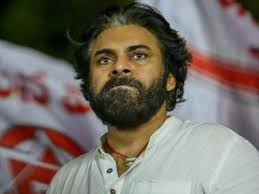
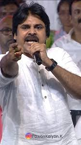
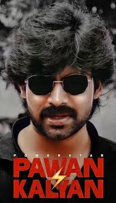

Konidela Pawan Kalyan (born Konidela Kalyan Babu; 2 September 1968[n 1])
is an Indian politician, actor, martial artist, and founder of the Jana
Sena Party. He is serving as the Deputy Chief Minister of Andhra Pradesh
since June 2024.[2] Primarily working in Telugu cinema, he is known for
his unique acting style and mannerisms. He has a large fan base and a cult
following and is one of the highest-paid actors of Indian cinema. He has
been featured in Forbes India's Celebrity 100 list multiple times since
2013. Kalyan is the recipient of a Filmfare Award South and a SIIMA Award
among other accolades.

Kalyan made his acting debut in the 1996 film Akkada Ammayi Ikkada Abbayi
but rose to prominence with the dramas Gokulamlo Seeta (1997) and
Suswagatham (1998). He achieved stardom for his performance in Tholi Prema
(1998), which won the National Film Award for Best Feature Film in Telugu
that year. Kalyan established himself as a leading actor with successful
projects such as Thammudu (1999), Badri (2000), Kushi (2001), Balu (2005),
Jalsa (2008), Gabbar Singh (2012), Attarintiki Daredi (2013), Gopala
Gopala (2015), Vakeel Saab (2021), and Bheemla Nayak (2022).[7] He
received the Filmfare Award for Best Actor – Telugu for Gabbar Singh while
Attarintiki Daredi held the record of being the highest-grossing Telugu
film of all time.[8][9] In addition to acting, he produces films under the
banners Anjana Productions and Pawan Kalyan Creative Works.

In 2008, Kalyan entered into politics as the youth wing president of his
brother Chiranjeevi's Praja Rajyam Party, but he left after it merged into
the Congress party. He founded the Jana Sena Party in March 2014 and was
listed as the most searched Indian celebrity politician on Google at the
time.[11][12][13] He is a black belt in Karate and trains in various
martial arts which he depicts in his films regularly. Kalyan is referred
to as Power Star by his fans and in the media. Kalyan is the founder of
the charity - Common Man Protection Force.